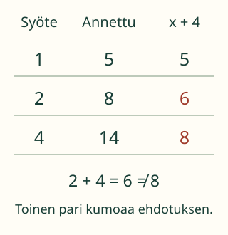

<link rel="stylesheet" href="lesson.css">
<section data-rule-lesson>

<section data-teaching-step="1" data-lesson-role="teaching-step">
<p> Loikka tutkii lukukonetta. Näkyvissä on muutama syöte ja tulos. Miten sääntöehdotuksen voisi keksiä ja koetella?</p>
<h2>Ehdota sääntö, etsi vastaesimerkki</h2>
<p><strong>Tavoitteesi:</strong> Muodostat sääntöehdotuksen ja vertaat sen tuloksia annettuihin havaintoihin.</p>
<p>Syöte on koneeseen annettu luku. Tulos on koneesta saatu luku. Tässä kokeilemme muotoa <strong>ax + b</strong>: kerro syöte luvulla a ja lisää b. Kirjain x tarkoittaa vaihtuvaa syötettä. Tarvittaessa käy yksi sijoitus ensin läpi aikuisen kanssa.</p>
</section>


<section data-teaching-step="2" data-lesson-role="teaching-step">
<h3>1. Ensimmäinen pari ei riitä</h3>
<figure data-lesson-role="worked-example"><figcaption>Yksikin ristiriita riittää osoittamaan, ettei ehdotus sovi kaikkiin näihin havaintoihin.</figcaption></figure>
<p>Sääntö x + 4 näyttää aluksi hyvältä: 1 + 4 = 5. Mutta seuraavaksi 2 + 4 = 6. Annettu tulos on 8. Tämä pari on <strong>vastaesimerkki</strong> ehdotukselle.</p>
</section>


<section data-teaching-step="3" data-lesson-role="teaching-step">
<h3>2. Ehdotus, joka sopii havaintoihin</h3>
<p>Kokeillaan 3x + 2: syötteellä 1 saadaan 3 × 1 + 2 = 5; syötteellä 2 saadaan 8; syötteellä 4 saadaan 14. Kaikki annetut parit täsmäävät. Myös 2 + 3x kuvaa samaa laskua: yhteenlaskettavien järjestys voi vaihtua.</p>
<p>Kolmen parin sopiminen ei todista, että löysimme ainoan mahdollisen säännön kaikille luvuille. Nyt etsimme sopivaa ehdotusta rajatusta ax + b -sääntöjen joukosta. Uusi havainto voi koetella ehdotusta lisää.</p>
</section>


<section data-teaching-step="4" data-lesson-role="teaching-step">
<p data-lesson-role="question"><strong>Ennusta:</strong> Mitä 3x + 2 antaisi syötteellä 5? Entä x + 4? Miten tuo testi erottaa ehdotukset?</p>
</section>


<section data-teaching-step="5" data-lesson-role="teaching-step">
<details data-lesson-role="answer"><summary>Ennusteen tarkistus</summary><p>3 × 5 + 2 = 17, mutta 5 + 4 = 9. Ehdotukset ennustavat eri tulokset. Koneen todellinen uusi tulos olisi vielä havaittava erikseen.</p></details>
<h3>Siirto: miksi uusi neliö tarvitsee vain kolme sivua?</h3>
<p>Piirrä vierekkäisiä neliöitä niin, että naapurit jakavat yhden sivun. Ensimmäinen tarvitsee neljä sivupätkää. Seuraavan vasen sivu on jo piirretty: lisää vain ylä-, ala- ja oikea sivu. Siksi neliöiden määrällä n pätkiä on <strong>4 + 3(n − 1) = 3n + 1</strong>, kun n on vähintään 1. Tässä perustelu tulee rakennusohjeesta, ei vain muutamasta taulukon luvusta.</p>
</section>


<div data-rule-practice hidden>

<fieldset><section data-teaching-step="6-machine" data-lesson-role="question"><h3>Rakenna ja koettele</h3><h4>Lukukone ja rakennusohje</h4><p>Annetut parit: 1 → 5, 2 → 8, 4 → 14.</p>
<p><label>Kerro syöte luvulla <select data-a><option>1</option><option>2</option><option>3</option><option>4</option></select></label> <label>Lisää <select data-b><option>-2</option><option>-1</option><option>0</option><option>1</option><option>2</option><option>3</option><option>4</option></select></label></p>
<p data-candidate></p><button type="button" data-action="step">Koettele seuraavaa paria</button><button type="button" data-action="all">Näytä kaikki sijoitukset</button>
<ol data-tested></ol><button type="button" data-action="check">Sopiiko ehdotukseni havaintoihin?</button><p data-feedback role="status" aria-live="polite"></p>
<details data-lesson-role="hint"><summary>Apua</summary><p>Lue sääntö sanoina. Esimerkiksi ”kerro kolmella, lisää kaksi”. Kirjoita yhden syötteen lasku näkyviin. Vertaa tulosta samaan taulukon riviin. Kaikki sijoitukset voi näyttää tukena.</p></details></section><section data-teaching-step="6-building" data-lesson-role="question" data-audience-columns><div data-visual-column><h4>Vierekkäisten neliöiden kaaviomalli</h4><p>Neliöt ovat tässä sivujen jakamista näyttävä kaavio. Sivupätkiä lasketaan; kuvan pikseleistä ei mitata pituuksia.</p><div data-squares></div><p data-square-note></p></div><div data-response-column><button type="button" data-action="minus">Poista viimeinen neliö</button><button type="button" data-action="plus">Lisää yksi neliö</button><p><label>Valitse koko rakennusohjetta kuvaava kaava <select data-formula><option value="separate">4n</option><option value="shared">3n + 1</option><option value="first">4 + 3(n − 1)</option><option value="missing">3n</option></select></label></p><button type="button" data-action="check-formula">Koettele kaavaa</button><p data-formula-feedback role="status" aria-live="polite"></p><button type="button" data-action="reset">Koko harjoitus alkuun</button><details data-lesson-role="hint"><summary>Apua yhteisiin sivuihin</summary><p>Ensimmäinen neliö tarvitsee neljä sivupätkää. Jokainen seuraava jakaa yhden sivun edellisen kanssa ja lisää kolme uutta. Laske ensin yhden ja sitten kahden neliön pätkät. Vertaa molempia valitsemasi kaavan arvoihin.</p></details></div></section></fieldset></div>


<section data-teaching-step="7" data-lesson-role="teaching-step">
<details data-lesson-role="teaching-step"><summary>Kokeile lisää</summary><p>Jos tiedät vain yhden parin 1 → 5, keksi kaksi eri sääntöä, jotka sopivat siihen. Etsi sitten syöte, jolla niiden ennusteet eroavat. Yhteen sopivia esimerkkejä voi saada monella tavalla.</p></details>
</section>

<details class="teacher" data-lesson-role="teacher-note"><summary>Aikuiselle ja ilman ruutua</summary><p>Luokat 7–9, prosessitaito. M-TH-04 ja M-TH-08 ovat vahvoja process_support-tukia, eivät required-portteja. Kertolaskufaktat ja M79-EXPR-EVAL ovat tämän esimerkin sisältötukia; niitä ei lisätä kanonisiksi pakollisiksi kaariksi. Laajasta sääntöjen löytämisestä tutkitaan tässä yksinkertaisia ax + b -ehdotuksia. Muotojen 3n + 1 ja 4 + 3(n − 1) oikeellisuus perustellaan samalla kuvallisella rakenteella.</p><p>Käytä ilman ruutua paperille piirrettyjä ruutuja ja merkitse yhteinen sivu. Oikeita tulitikkuja tai sytyttämistä ei tarvita. Neliökaavio ei esitä mitattavaa mittakaavapiirrosta. Yksi vastaesimerkki kumoaa yleisen väitteen sovitussa alueessa; muutama täsmäävä esimerkki ei todista rajattoman funktion ainutlaatuisuutta. Sijoitusten näyttäminen on tukea. Kertoimen ja lisäyksen valinta ei todenna vapaata lausekkeen muodostamista, itsenäistä laskutaitoa, matemaattista todistamistaitoa tai pysyvää oppimista. Mitään ei tallenneta.</p></details>

<section data-teaching-step="8" data-lesson-role="teaching-step">
<p data-lesson-role="question"><strong>Lopuksi:</strong> Mitä yksi vastaesimerkki kertoo ehdotuksesta? Mitä kolme sopivaa paria ei vielä takaa?</p>
</section>

</section>
